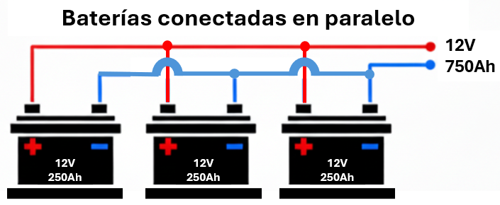

Unidad 1: Fundamentos Físicos - Lección 5
🔗 ¡Uniendo fuerzas! Serie y Paralelo
En la lección anterior aprendiste a leer los colores de las resistencias. Ahora tienes el LED y su protección listos. Pero, imagina que quieres conectar dos LEDs. Tienes dos opciones: ponerlos en fila india o ponerlos uno al lado del otro. Esta decisión cambia cómo fluye la energía y es la base de todo diseño electrónico.
1. Circuitos en Serie (La fila india)
La corriente solo tiene un camino único. Sale de la pila, pasa por el primer componente, luego por el segundo y regresa.
Fig 1. En serie, la corriente es la misma para todos.
El Voltaje se reparte: Si tienes 5V y dos LEDs iguales, a cada uno le tocan solo 2.5V. ¡Brillan menos!
💡 Ventaja de la Serie: "Un Guardián para Todos"
Aquí tienes una gran ventaja: Como la corriente es una sola fila india, una sola resistencia al principio (o al final) es capaz de controlar a todos los LEDs de la fila.
¿Por qué funciona aquí?
Porque la corriente no tiene escapatoria. La misma intensidad que frena la resistencia es la misma que pasa por el LED 1 y el LED 2. En Serie, la física juega a tu favor:
- Una sola resistencia basta: Como la corriente solo tiene un camino, es la misma para todos. Una sola resistencia controla a toda la fila perfectamente.
- Puedes mezclar colores: Puedes poner un LED Rojo y uno Azul en la misma fila serie. Como la corriente está obligada a pasar por ambos, ambos encenderán (siempre que tengas suficiente voltaje).
El único requisito es que tu pila tenga fuerza suficiente para vencer a todos los LEDs juntos.
$$V_{fuente} > V_{led1} + V_{led2} + \dots$$
Ejemplo: Con una pila de 5V, puedes encender dos LEDs Rojos (2V+2V=4V ✅), pero NO puedes encender dos Azules (3V+3V=6V ❌).
👀 Ojo al dato: ¡No te acostumbres! Cuando pasemos a Paralelo en la siguiente sección, verás que esta regla de "una sola resistencia" se vuelve peligrosa.
⚡ El Divisor de Voltaje: Tu "Regla de Reparto" en Serie
En paises como México, Colombia, Chile, Centroamérica se le conoce como divisor de voltaje, mientras que en España, Argentina, Uruguay, Perú se suele decirle divisor de tensión. "Voltaje" y "tensión" son sinónimos en electricidad; la diferencia es solo regional.
Cuando conectas resistencias en serie, el voltaje no se distribuye al azar: cada resistencia "toma" una porción proporcional a su tamaño. ¡Es como repartir un pastel: el más grande se lleva más rebanada!
🔍 ¿Cómo funciona? (Sin fórmulas complicadas)
Imagina este circuito simple:

- R₁ es el doble de grande que R₂ → se queda con el doble de voltaje
- Total = 3 partes (2kΩ + 1kΩ)
- R₁ toma 2/3 del pastel → 3.33V
- R₂ toma 1/3 del pastel → 1.67V
- Vout = 1.67V (el voltaje sobre R₂)
💡 Regla de oro: El voltaje sobre una resistencia es proporcional a su tamaño respecto al total.
| Caso | Resultado práctico |
|---|---|
| R₁ = R₂ (iguales) | Vout = mitad del voltaje |
| R₂ es el doble de R₁ | Vout = 2/3 del voltaje |
| R₁ es el doble de R₂ | Vout = 1/3 del voltaje |
🌟 Aplicación real: Adaptar 5V → 3.3V
Necesitas alimentar un sensor de 3.3V con tu Arduino de 5V:

Cálculo rápido: 5V × (2kΩ / 3kΩ) = 3.33V → ¡Perfecto!
⚠️ ¡Ojo al dato! Dos advertencias clave
1. Solo para señales pequeñas:
El divisor funciona bien para sensores o entradas de microcontroladores, pero NO para motores o cargas grandes. Si conectas algo que pide mucha corriente, el voltaje "se cae".
2. Siempre gasta energía:
Aunque no uses Vout, la corriente sigue fluyendo por las resistencias. Para proyectos con batería, usa valores altos (10kΩ+) y minimiza el desperdicio.
🎯 Autoevaluación rápida
Si puedes responder estas tres preguntas sin ayuda, ¡has dominado el divisor de voltaje!
- ¿En qué tipo de circuito funciona el divisor de voltaje? → Serie
- ¿Qué determina cuánto voltaje "toma" cada resistencia? → Su tamaño proporcional al total
- ¿Para qué SÍ sirve y para qué NO sirve? → SÍ: sensores, entradas de micro. NO: motores, cargas grandes
2. Circuitos en Paralelo (La autopista)
La corriente se divide en múltiples caminos. Cada LED tiene su propio cable directo a la pila.
Fig 2. En paralelo, el voltaje es el mismo para todos.
El Voltaje es igual: Ambos reciben 5V completos. ¡Brillan al máximo!
⚠️ ¡La Regla de Oro del Paralelo!
Es muy tentador usar una sola resistencia para varios LEDs en paralelo, pero es una mala práctica.
1. Si son de Diferente Color:
El LED Rojo pide ~2V y el Azul ~3V. La electricidad es perezosa: se irá toda por el camino fácil (el Rojo) y el Azul no encenderá. Además, ¡el Rojo recibirá demasiada corriente y podría quemarse!
2. Si son del Mismo Color:
Aunque sean "gemelos", ningún LED es idéntico a otro. Si comparten resistencia, uno de ellos "robará" más corriente que el otro, se calentará más y morirá primero (Efecto Dominó).
✅ La Solución:
En paralelo, dale a CADA LED su propia resistencia independiente ("Rama").
3. Comparación Definitiva
Aquí tienes el resumen maestro para que nunca dudes cuál elegir:
| Característica | Circuito en Serie ➡️➡️ | Circuito en Paralelo ⬆️⬇️ |
|---|---|---|
| Camino de la corriente | Un solo camino (Fila india) | Múltiples caminos (Carriles) |
| Intensidad (I) | Igual en todos los componentes | Se divide entre las ramas |
| Voltaje (V) | Se divide entre los componentes | Igual en todos (El de la fuente) |
| Resistencia Total | Rtotal = R₁ + R₂ + ... | 1/Rtotal = 1/R₁ + 1/R₂ + ... |
| Fallo de un componente | Todo el circuito se apaga 💀 | Los demás siguen funcionando 👍 |
| Brillo de los LEDs | Menor brillo (voltaje dividido) | Máximo brillo (voltaje completo) |
| Uso común | Guirnaldas navideñas antiguas | Instalaciones domésticas |
| Resistencias | Una sola para todos ✅ | Una por LED ⚠️ Obligatorio |
4. Análisis de Caso: Varios LEDs con UNA sola Resistencia
Fig 3. El diseño polémico: Una sola resistencia (cuello de botella) para todos los LEDs.
🔥 El Problema de la Potencia ($P$)
Aquí es donde muchos fallan. Al pasar tanta corriente ($0.1A$) por una sola resistencia, el calor se dispara.
El Peligro: Una resistencia común de tu kit es de 0.25 Watts (1/4 Watt). ¡Se quemaría inmediatamente! Necesitarías comprar una resistencia especial de 1/2 Watt o 1 Watt.
✅ La Solución Profesional: "Divide y Vencerás"
Para evitar todos estos problemas, la regla de oro en ingeniería es: Dale a cada LED su propia resistencia independiente.
- Adiós al calor: Cada resistencia maneja poca corriente, así que puedes usar las baratas de 1/4 Watt sin miedo.
- Adiós al efecto dominó: Si un LED falla, los demás siguen brillando felices.
- Libertad de Colores: Como cada rama es independiente, puedes calcular una resistencia de 330Ω para un LED rojo y una de 100Ω para un azul en el mismo circuito. ¡Cada uno tendrá su brillo perfecto!
☠️ El Riesgo Mortal: "Efecto Dominó"
Este es el mayor riesgo de diseño. Imagina que uno de los 5 LEDs se funde o se desconecta.
- La resistencia estaba dejando pasar 100mA (calculados para 5 bocas).
- Ahora solo quedan 4 LEDs, pero la resistencia sigue dejando pasar casi la misma corriente.
- Esos 100mA se reparten entre 4: Tocaría a 25mA por LED. (Sobrecarga leve).
- Uno de ellos no aguanta y se quema. Quedan 3.
- Ahora los 100mA se reparten entre 3: 33mA por LED. (Sobrecarga crítica).
- ¡Pum! Se queman uno tras otro en cadena en fracción de segundos.
📋 Resumen de la Libreta de Ingeniería
Si decides usar este diseño, debes vigilar estos parámetros:
| Parámetro | Acción Crítica |
|---|---|
| Voltaje ($V_f$) | ¡Nunca mezcles colores! Todos deben ser idénticos (ej: todos Rojos). |
| Corriente ($I_{total}$) | Suma la de todos los LEDs ($n \times 20mA$). |
| Potencia ($W$) | Calcula los Vatios ($W$). Probablemente necesites una resistencia grande (Cerámica). |
⚠️ Advertencia Crítica para Futuros Docentes
El diseño de "una sola resistencia para varios LEDs en paralelo" es extremadamente peligroso en contextos educativos. Si un estudiante lo implementa:
- Los LEDs pueden quemarse en cadena (Efecto Dominó).
- La resistencia puede sobrecalentarse y causar quemaduras.
- La fuente de alimentación puede dañarse por corriente excesiva.
Regla de oro en el aula: Enseña SIEMPRE la configuración segura (una resistencia por LED en paralelo). Nunca muestres el diseño peligroso como "alternativa aceptable".
Recuerda: Tus futuros alumnos confiarán en tus enseñanzas. Sé responsable con lo que transmites.
🍎 Rincón del Docente: El "Circuito Humano"
Objetivo pedagógico: Que los niños comprendan la diferencia entre Serie y Paralelo mediante su propio cuerpo, sin usar terminología técnica.
👥 Actividad 1: "La Cadena de Secretos" (Serie)
Materiales: Ninguno (solo niños).
Procedimiento:
- Forma un círculo con los niños tomados de las manos.
- El primer niño recibe un "apretón secreto" y lo pasa al siguiente.
- Si un niño suelta la mano, el apretón se detiene.
Pregunta guía: "¿Qué pasa si alguien se suelta? ¿El secreto llega al final?"
Lección: "En serie, todos dependemos del otro. Si uno falla, todos fallamos."
🛣️ Actividad 2: "Las Carreras Paralelas" (Paralelo)
Materiales: Conos o marcadores para delimitar carriles.
Procedimiento:
- Divide a los niños en 3-4 grupos (carriles).
- Cada grupo corre por su carril hacia la meta.
- Si un niño tropieza en un carril, los demás siguen corriendo.
Pregunta guía: "¿Qué pasa si alguien se cae? ¿Los demás pueden seguir?"
Lección: "En paralelo, cada uno tiene su propio camino. Si uno falla, los demás siguen funcionando."
💡 Consejo Pedagógico
Después de las actividades, haz que los niños dibujen en su cuaderno:
- Un círculo con niños tomados de la mano (Serie)
- Varios carriles con niños corriendo (Paralelo)
Esto refuerza la conexión entre la experiencia física y el concepto abstracto.
🔋 Tip de Ingeniero: ¿Baterías en Serie o Paralelo?
Analicemos el ejemplo de 3 baterías de 12V y 250Ah cada una:
1. Conexión en Serie (Más Fuerza)

Unimos el positivo de una con el negativo de la siguiente.
- Voltaje (Se suma):
\(12V + 12V + 12V = \mathbf{36V}\) - Capacidad (Igual):
\(\mathbf{250Ah}\) (Dura lo mismo)
2. Conexión en Paralelo (Más Tiempo)
Unimos todos los positivos juntos y todos los negativos juntos.
- Voltaje (Igual):
\(\mathbf{12V}\) (La fuerza no cambia) - Capacidad (Se suma):
\(250 + 250 + 250 = \mathbf{750Ah}\)
❓ Preguntas de Consolidación
Responde estas preguntas para asegurarte de que dominas los conceptos técnicos y estás listo para enseñarlos en tu futura aula:
1. Explica con tus propias palabras la diferencia entre circuitos en Serie y en Paralelo, usando la metáfora de "fila india" vs "carriles".
Circuito en Serie (Fila India): Todos los componentes están conectados uno detrás del otro, formando una sola línea. La corriente no tiene escapatoria: pasa por el primero, luego por el segundo, y así sucesivamente. Es como una fila de niños tomados de la mano: si uno se suelta, todos se separan.
Circuito en Paralelo (Carriles): Cada componente tiene su propio camino directo a la fuente. La corriente se divide y cada rama funciona de forma independiente. Es como varios carriles en una autopista: si un carril se cierra por mantenimiento, los demás siguen funcionando.
Para tu futura aula: Usa la actividad del "Circuito Humano" para que los niños experimenten físicamente ambas configuraciones antes de verlas en un diagrama.
2. ¿Por qué en Serie una sola resistencia puede proteger varios LEDs, pero en Paralelo cada LED necesita su propia resistencia?
En Serie: La corriente es la misma en todos los puntos del circuito (Ley de Kirchhoff). Si la resistencia limita la corriente a 20mA al inicio, esos mismos 20mA pasarán por el LED 1, luego por el LED 2, y así sucesivamente. No hay forma de que la corriente "se escape" o aumente.
En Paralelo: La corriente se divide entre las ramas. Si tienes 5 LEDs en paralelo y una sola resistencia de 100Ω, cada LED podría "robar" más corriente que los demás debido a pequeñas diferencias de fabricación. El LED que roba más corriente se calienta, roba aún más, y finalmente se quema (Efecto Dominó).
Regla de oro: En paralelo, cada LED debe tener su propia resistencia para garantizar que cada uno reciba exactamente la corriente que necesita.
3. Tienes una fuente de 9V y quieres conectar tres LEDs Rojos (2V cada uno) en Serie. ¿Funcionará? ¿Necesitas resistencia?
Verificación de voltaje:
Vtotal LEDs = 2V + 2V + 2V = 6V
Vfuente = 9V
Como 9V > 6V, ¡SÍ funcionará! Pero...
¿Necesitas resistencia? ¡Absolutamente!
El voltaje sobrante es: 9V - 6V = 3V
Si cada LED necesita 20mA, la resistencia debe ser:
R = V / I = 3V / 0.02A = 150 Ω
Error común: Algunos piensan que "como los LEDs consumen voltaje, no necesito resistencia". Esto es falso: la resistencia controla la corriente, no solo el voltaje.
4. Diseña un circuito con 2 LEDs Rojos (2V, 20mA) usando una fuente de 5V. Muestra ambas opciones (Serie y Paralelo) con sus resistencias calculadas.
Opción 1: Serie
VLEDs = 2V + 2V = 4V
Vsobrante = 5V - 4V = 1V
R = 1V / 0.02A = 50 Ω (usa 56 Ω comercial)
Ventaja: Una sola resistencia. Desventaja: Brillo reducido (cada LED recibe menos voltaje).
Opción 2: Paralelo
Cada LED necesita: Vsobrante = 5V - 2V = 3V
R por LED = 3V / 0.02A = 150 Ω (usa 150 Ω o 220 Ω)
Ventaja: Máximo brillo. Desventaja: Necesitas dos resistencias.
Recomendación: Para proyectos educativos, elige Paralelo. Aunque uses más componentes, cada LED brilla al máximo y si uno falla, el otro sigue funcionando.
5. Explica el concepto de "Divisor de Voltaje" y da un ejemplo práctico de cuándo usarlo en un proyecto con Arduino.
Concepto: Un divisor de voltaje es un circuito en Serie con dos resistencias que "reparte" el voltaje de la fuente proporcionalmente a sus valores.
Fórmula:
Vout = Vin × (R₂ / (R₁ + R₂))
Ejemplo práctico con Arduino:
Tu sensor de temperatura funciona a 3.3V, pero tu Arduino entrega 5V en sus pines. Si conectas el sensor directo a 5V, podría dañarse.
Solución: Usa un divisor de voltaje:
- R₁ = 1kΩ
- R₂ = 2kΩ
- Vout = 5V × (2kΩ / 3kΩ) = 3.33V ✅
Advertencia: Los divisores de voltaje solo sirven para señales de baja corriente (sensores, entradas digitales). No uses divisores para alimentar motores o LEDs de alta potencia.
6. Un niño te pregunta: "¿Por qué las luces de mi casa no se apagan todas cuando se quema una bombilla?". ¿Cómo le respondes usando los conceptos de Serie y Paralelo?
Respuesta técnica: Las instalaciones eléctricas domésticas están conectadas en Paralelo. Cada bombilla (o enchufe) tiene su propio camino independiente hacia la fuente de energía.
Metáfora para niños:
"Imagina que tu casa es una gran autopista con muchos carriles. Cada bombilla es un carril. Si un carril se cierra por construcción (bombilla quemada), los demás carriles siguen funcionando perfectamente. Eso es Paralelo."
"Ahora imagina las luces navideñas antiguas: estaban conectadas en Serie, como una fila de niños tomados de la mano. Si uno se suelta (bombilla quemada), toda la fila se separa y todas las luces se apagan."
Conexión STEAM: Esta es una excelente oportunidad para hablar sobre ingeniería de sistemas: los ingenieros diseñan las casas en Paralelo precisamente para evitar que un fallo pequeño afecte todo el sistema.
🎧 Podcast: Conversación entre Expertos
Dos docentes exploran las diferencias entre serie y paralelo con ejemplos cotidianos, analizan el peligroso "efecto dominó" en diseños mal hechos, y comparten estrategias para enseñar el divisor de voltaje sin fórmulas complejas.
🪪 Tarjeta de Identidad del Prompt Ético
Como futuro docente, aprenderás a usar la IA Generativa para potenciar tu pensamiento, no para reemplazarlo. Esta tarjeta te guía para construir prompts éticos que te ayuden a resolver dudas específicas de cada lección.
📝 Mi Fórmula de 4 Pasos:
Resume CON TUS PALABRAS lo aprendido. Ej: "en serie la corriente es igual para todos los componentes pero el voltaje se reparte, mientras que en paralelo el voltaje es igual pero la corriente se divide entre ramas."
Plantea una DUDA ESPECÍFICA o aplicación. Ej: "por qué en paralelo cada LED necesita su propia resistencia y no se puede compartir una sola como en serie, especialmente cuando los LEDs son del mismo color."
Define TU AUDIENCIA (edad/curso). Ej: "a estudiantes de grado 8° que nunca han armado un circuito con más de un LED."
Pide retroalimentación crítica. Ej: "al explicar por qué no se debe usar una sola resistencia para varios LEDs en paralelo, incluso si son del mismo color."
💡 Ejemplo aplicado a esta lección:
"Comprendí que en circuitos en serie la corriente es igual para todos los componentes y el voltaje se reparte entre ellos, mientras que en paralelo el voltaje es igual para todas las ramas pero la corriente se divide. También entendí que en serie una sola resistencia puede proteger varios LEDs porque la corriente no tiene escapatoria, pero en paralelo cada LED necesita su propia resistencia para evitar el 'efecto dominó' donde uno se quema y arrastra a los demás. Quiero saber: si tengo una fuente de 9V y quiero conectar 4 LEDs rojos (2V cada uno), ¿cuál configuración es más eficiente energéticamente (serie o paralelo) y por qué? Explícame como si fuera a enseñárselo a mis futuros estudiantes de grado 9°, usando una analogía con el agua que fluye por tuberías. Incluye un error común que los niños suelen cometer al diseñar circuitos con múltiples LEDs, especialmente confundiendo cuándo se puede compartir una resistencia y cuándo no."
🚀 Próximamente...
¡Ya dominas el arte de conectar componentes y repartir voltajes como un ingeniero! Pero hay un problema práctico:
Un circuito que siempre está encendido es como una lámpara que nunca se apaga: gasta energía, se calienta y... ¡no te deja dormir! 😴
En la próxima lección descubrirás el control definitivo: los Interruptores. Aprenderás:
- Por qué "Abierto" significa "Apagado" y "Cerrado" significa "Encendido" (¡al revés de lo que piensas!).
- La diferencia entre un Pulsador (como un timbre) y un Interruptor de Palanca (como la luz de tu cuarto).
- Cómo elegir el interruptor correcto para tu proyecto.
¿Listo para pasar de "conectar" a "controlar"?